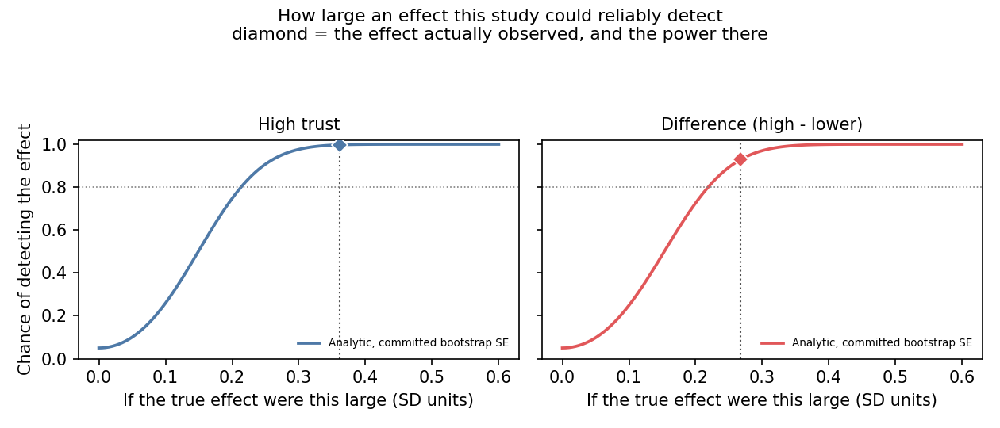

All three headline quantities clear their minimum detectable effects; the corner increment does not.
This design identifies the stratum effects and the corner total. It does not identify the corner increment.
Minimum detectable effect at 80% power, from the same bootstrap standard errors the estimates use.
Trust-stratum estimates
| Target | Observed | SE | MDE | Power | Clears |
|---|---|---|---|---|---|
| Higher trust | 0.362 | 0.076 | 0.213 | 99.7% | yes |
| Difference between them | 0.267 | 0.078 | 0.219 | 93% | yes |
| Lower trust | 0.094 | 0.061 | 0.171 | 34% | no |

The conjunctive corner
| Target | Observed | MDE | Power | Clears |
|---|---|---|---|---|
| Corner effect, higher trust | 0.619 | 0.485 | 95% | yes |
| Corner effect, lower trust | 0.003 | 0.383 | 3% | no |
| Corner increment, higher trust | 0.347 | 0.569 | 40% | no |
| Corner increment, lower trust | −0.125 | 0.467 | 11% | no |
The MDE is the normal-approximation formula applied to the committed bootstrap standard error of each quantity. The corner effects are better powered than the increments δ, because they are larger against essentially the same noise.

Robustness
- Covariate adjustment.Exact mean balance on 18 covariates makes residual adjustment identically zero; there is no adjusted variant to report.
- The cutoff choice does not drive the corner.The corner total's 95% CI excludes zero at the median, the 58.3rd percentile and the tercile; δ keeps P(>0) between 0.946 and 0.958 across the three.
- Nothing is fitted except the treatment effect.Corner membership is a deterministic function of two pre-treatment variables, so no cutoff or sharpness parameter is estimated.
Sensitivity to the identifying assumption
Mean ignorability of the no-treatment outcome identifies the trust-stratum estimates, given the 18 balanced covariates. This design cannot test it, because expert trust was never measured in the control arm. The breakdown values are +0.58 SD for the higher-trust effect and +0.28 SD for the difference between the two. The estimates fall to zero only if a hidden baseline gap that large survives exact balance on 18 covariates.
Measuring expert trust before treatment estimates the missing control-arm quantity directly.